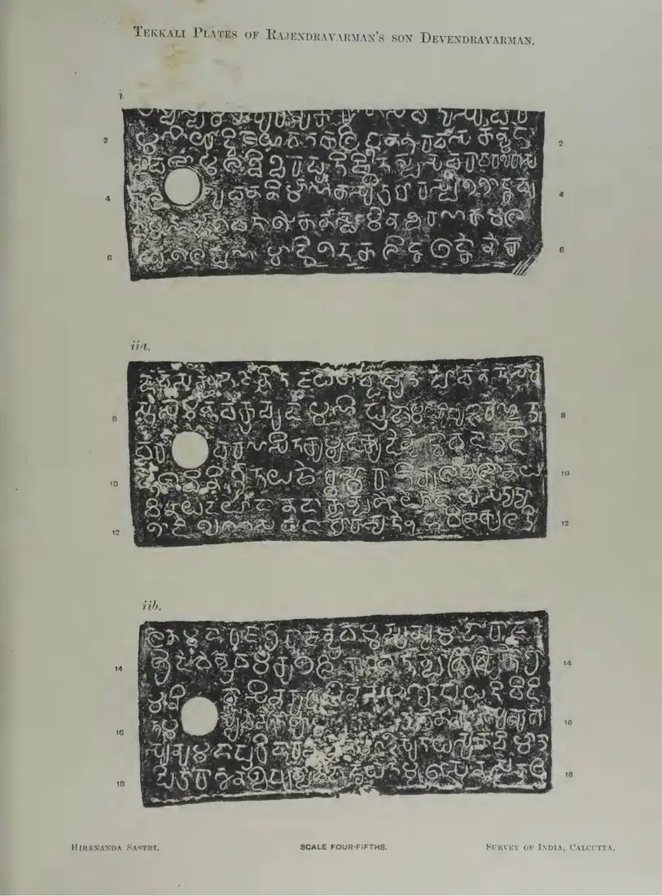
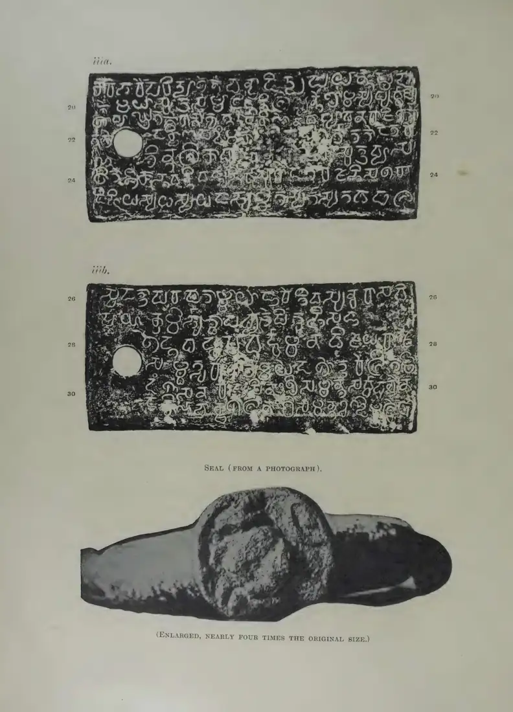

Tekkali plates of Rajendravarman's son Devendravarman
No. 32.—TEKKALI PLATES OF RAJENDRAVARMAN'S SON DEVENDRAVARMAN.
By E. HULTZSCH, PH.D.; HALLE (SAALE).
These plates belong to Sri Gopinath Deb, Esq., Second Prince of Tekkali in the Ganjām District of the Madras Presidency. Ink-impressions of them were kindly forwarded to me by Rao Bahadur H. Krishna Sastri. These are “three copper-plates, each measuring about 6” high and 2” broad, and strung on a ring of the same metal. The first plate bears writing only on the inner face. All the inscribed faces appear to have had raised rims, which are now worn out. The ring is about 3” in diameter and is fixed in a circular seal measuring 1” in diameter. The seal is much damaged and broken on one side. It bears the figure of a seated bull, facing the proper left. Below the bull is a lotus, of which only three petals are now visible. The three plates, with ring and seal, weigh 85 tolas.”
The writing on the plates is fairly well preserved and distinct, except where it has been wilfully tampered with by some person who erased and changed certain topographical and personal names which the inscription must have contained originally. The alphabet closely resembles that of the Alamaṇda plates of the year 304.3 The language is very barbarous Sanskrit prose, with two equally faulty verses 'sung by Vyāsa', which are quoted in lines 24-27.
The inscription4 records the grant of a village by the worshipper of the god Gōkarṇa-svāmin (l. 5) on the Mahēndra mountain (l. 2 f.) and the ornament of the spotless family of the Gaṅgas,—the Mahārāja Dēvēndravarman, who was the son of the Mahārāja Rājēndravarman (ll. 12-14). He addressed this edict from his residence of Kaliṅganagara (l. 2) to the ryots inhabiting a village whose name has been later on erased and replaced by the word Ni[y]ino in Nāgarī characters (l. 14). The name of the district in which this village was included has also been tampered with, but may have been originally [Rū]pavarttani.5 The name of the Brāhmaṇa donee seems to have been erased, but he was apparently a 'good poet' (su-kavi) and the son of a 'great doorkeeper' (mahāpratīhāra, l. 17). The description of the boundaries of the village granted (ll. 20-23) has also been tampered with and cannot be restored in full.
1 Cf. above, Vol. III, p. 134, note 1, and Vol. XIV, p. 363, passim.
2 This name was spelled Tuṅgannā in line 11.
3 Above, Vol. III, p. 18.
4 See Ep. Rep. for 1924, p. 10; App. A, No. 2, and p. 97, para. 2.
5 Cf. above, p. 309.
Line 28 f. contains the date of the inscription. If the compound [šata]-mayē is explained as a clerical error for šata-trayē, it may be translated by: “In the year three-hundred and ten of the kingdom of growing victory of the Gaṅga race.” Dēvēndravarman, whose subjoined grant is dated in the year 310, might then have been a second son and successor of that Rājēndravarman whose first son, Anantavarman, issued the Alamaṇda plates of the year 304.1 The two names of the writer (l. 30) and of the goldsmith (akshaśālin) who engraved the edict (l. 31) remain doubtful and suspicious.
It will be seen that at present this whole document is of very small practical value. But I am publishing it with the hope that, in the light of future discoveries, it may still prove of some use in unravelling the tangled web of the Gāṅga genealogy and chronology.
TEXT.2
First Plate.
- 1 ³[Ōm] [¹*] Svasy=Amara-pur-ānukāriṇa[h*] sarva-rtu-sukha-ra]-⁴
- 2 maṇi(ṇ)yād=vijayā(ya)vata[h*] Kaliṅganagara-vāsakān=Mahē-
- 3 ndrāchal-āmala-śikhara-pratishthitasya sa-char-āchara-gurō[h*] sa-
- 4 kala-bhuvana-nirmāṇ-aika-su(sū)tradhārasya śaśānka-chu(chū)-
- 5 dāmaṇēr=bhagavatō Gōkarna(rṇa)-sv[ā]minaś=charaṇa-kamala-
- 6 yugala-praṇāmād=vigata-Kaliṅkalaṅkō=⁵nō(nē)k-ā-
Second Plate ; First Side.
- 7 hava-sa[m*]kshōbha-janita-jaya-śavdā(bdah) pratāp-āvanata-sama-
- 8 sta-sāmanta-chakra-chu(chū)dāmaṇi-prabhā-mañjari(rī)-puñja-rañja(ñji)ta-
- 9 vara-charaṇa[h*] sita-kumuda-ku[m*]d-ēndēdvāvadāta-⁶di-
- 10 [dgē]śa-⁷vinirggata-yashō(śō)-dhvast-ārāti-kulāchalō naya-
- 11 vinaya-dayā-dāna-dākshanya⁸-śaury-audārya-satya-tyā-
- 12 g-ādi-guṇa-sa[m*]pad-ādhāra-bhu(bhū)tō Gaṅg-āmala-kula-ti-
Second Plate ; Second Side.
- 13 laka(kō) mahārāja-śri(śrī)-Rājēndrava[r]mma-su(sū)nu[r]=mahārāja-
- 14 śri(śrī)-Dēvēndrava[r]m[ā*] kuśali(lī) . . pavarttany[ām]⁹ Ni[y]ino-¹⁰grā-
- 15 ma-nivāsina[h*] kuṭu[miṁna][h*]¹¹ samājñāpayati [||*] Vidi-
- 16 tam=astu vō [bhavatām]¹² grāma . . . .
1 Above, Vol. III, p. 18. [See also Ep. Rep. for 1924, p. 97, para. 2, and the genealogical table on p. 98.—Ed.]
2 From ink-impressions supplied by Rao Bahadur Krishna Sastri.
3 Expressed by a symbol. For svasy= read svasty=.
4 The tops of the letters of this line are cut away.
5 Read -Kali-kalaṅkō=.
6 Read -ēndv-avadāta=.
7 Read -dig-dēśa- and cf. above, Vol. III, p. 223, text line 7.
8 Read -dākshiṇya=.
9 One or two letters at the beginning of this word have been erased and corrected. The original reading may have been Rūpa°.
10 The name Ni[y]ino has been substituted by a second hand. The vowel of the first and second syllables is a Nāgarī i, while this vowel is in every other instance expressed by a curve above the consonant.
11 Read kuṭuṁbinaḥ.
12 The bracketed word is engraved on an erasure.
Plate 1 is bound after this page.
Plate 2 is bound after this page.
17 su(sū)nu-mahāpratihāra1 . . [śarmaṇa][h*] . sutāya su-kavi2 mātā-
18 pitrōr=ātmānaś=cha puny(ny)-ābhivrīddhayē t[ā]mv[ra]-śāsana3 sakala-
Third Plate ; First Side.
19 kara-bharai(ra)-parityāgēna chandr-āditya-paryanta[m*] prada-
20 tō(ttō) mayā [||*] Atra si(si)mā-ling[ā*]ni likhyantē [||*] Grāmasya pūrvva-di-
21 śā(śi) vyāghra[h*]4 tatō [gartā5 nyag-gatā ?] dakshiṇēna vāpyā [va]na-rāji[h*]
ga[rtā]
22 tatō dakshiṇa-paśchima-[kō] . . . . [ga]rtā tatō(ta) uta(tta)rē-
23 ṇa tintalikā-6vri[ksha][h*] [va]na-[rāji]kā [||*] Atra Vyāsa-
24 gi(gi)tā[h*] [ślō]kā bhavanti [||*] , Va(Ba)hubhir=vvasudhā datā(ttā) r[ā*]jabhi[h*]
Sagar-ā-
25 di[bh]i[h*] ] yasya-yasya yadā bhūmi[s=*]tasya-tasya tath[ā](dā) phala[m !! l*]
Third Plate ; Second Side.
26 Sva-dattā[m*] para-dātām=vā7 yō harēti(ta) vasundharā[m *] sa vi-
27 shthāyām kṛimir=bhu(bhū)tvā pachyatē pitrībhi[h*] saha [|| 2*]
28 Gaṅga-va[ṇśa]-8[pra]varddham[ā*]na-vijaya-rāja(jya)-
29 samvatsarā-9[śata]-mayē10 daś-ōttarē [*] Li[khi*]tam=i-
30 damśāsana[m*] ra..[s]in[ām]11 śri(śrī)-s[ā*]manta-Sarvva[chandrē]na(ṇa) (?) [*]
31 Utki(tkī)rṇa[m*] ch=ākshaś[ā]][i]n[ā] śri(śrī)-s[ā*]manta-Khaṇḍi[malēpā]12 [||*]
1 The syllable tī looks like dhī.
2 Read perhaps su-kavyē.
3 Read tāvva-śāsanēna.
4 This might be the name of some tree.
5 Cf. above, Vol. III, p. 134, and note 2.
6 Cf. above, Vol. III, p. 20, note 6.
7 Read -dattām vā.
8 Read -vaṇśa-.
9 Read -saṇvatsara-.
10 Read perhaps -bata-trayē, as suggested in my introductory remarks, and cf. -sata-drayē, Ind. Ant., Vol. XVIII, p. 145, text line 27.
11 Read rahasyēna and cf. above, Vol. III, p. 21, note 1.
12 Read perhaps mallēna. Khaṇḍi-trī-sāmanta occurs in Ind. Ant., Vol. XVIII, p. 145. text line 26 f.

